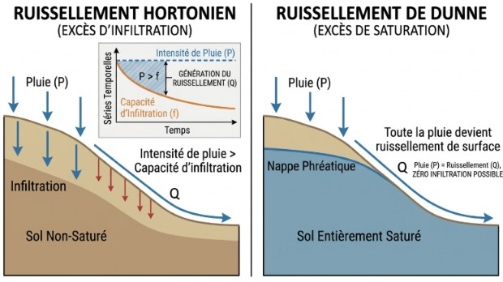

Modélisation Numérique
Les résultats cartographiques de ruissellement présentés sur cette plateforme sont la réponse d'un modèle mathématique codé en FORTRAN. Ce modèle simule la propagation dynamique des flux d'eau sur le relief.
Forçage du MNT (Road Burning)
Pour obtenir des axes de ruissellement réalistes, le MNT brut a été corrigé. Les infrastructures (routes, talus, murets viticoles) agissent comme des barrières ou des canalisations artificielles. L'algorithme "creuse" numériquement ces axes dans le MNT pour forcer l'eau à suivre le réseau réel.
Scénarios Pluviométriques
Q2 à Q100 : Périodes de retour des crues (de 2 ans à 100 ans).
Condition AMC :
- AMC II : Sol dans un état d'humidité "Normal".
- AMC III : Sol "Saturé" (infiltrations quasi nulles, ruissellement immédiat).
Comparatif des Conditions AMC

Constats sur le bassin
L'analyse spatiale met en évidence une concentration rapide des flux sur les versants viticoles de forte pente. En condition AMC III (sol saturé), même une pluie de fréquence Q10 génère des axes de ruissellement majeurs menaçant l'aval urbain de Rouffach.
Télécharger la synthèse (EXCEL)